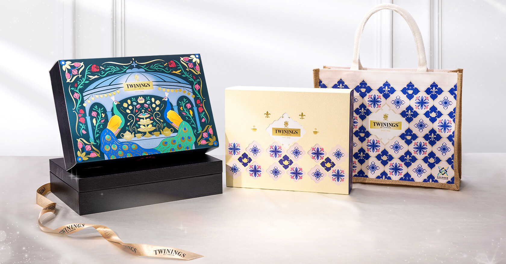

孔雀繁麗的百眼花紋，當尾羽舒展
花磚與茶香交織成一場融合東西美學的風格茶宴
於玻璃茶屋中盛大展開
唐寧茶以英國維多利亞時期
貴族宅邸的裝飾藝術「花磚」為靈感
攜手台灣花磚博物館
讓西方茶韻與東方花語共譜一場風格茶宴
自葉至湯，由香入韻，在細節之間，唐寧茶邀請您品味生活的雅致與底蘊
唐寧茶 × 台灣花磚博物館
以貴族茶宴與東方花語為靈感主題
將品味生活與優雅並置一席
展現文化與美學的風格盛宴

唐寧風格盛宴禮盒
唐寧茶香綻放禮盒

孔雀繁麗的百眼花紋，當尾羽舒展
花磚與茶香交織成一場融合東西美學的風格茶宴
於玻璃茶屋中盛大展開
唐寧茶以英國維多利亞時期
貴族宅邸的裝飾藝術「花磚」為靈感
攜手台灣花磚博物館
讓西方茶韻與東方花語共譜一場風格茶宴
自葉至湯，由香入韻，在細節之間，唐寧茶邀請您品味生活的雅致與底蘊
以貴族茶宴與東方花語為靈感主題
將品味生活與優雅並置一席
展現文化與美學的風格盛宴
唐寧風格盛宴禮盒
唐寧茶香綻放禮盒
唐寧將「百福呈祥」與「吉祥花磚」
以英倫美學重譯其紋理、章法與配色
讓花磚的視覺節奏與英倫茶香的優雅互為表裡
一杯唐寧茶蘊，揭開冬日序幕
當沖泡的熱氣自杯中升起，空氣中瀰漫雋永茶香
為每天的日常，增添不凡的高雅氣息
以「優雅綻放 風格盛宴」為題，將花磚美學與英倫茶香巧妙交織
呈現出獨一無二的「唐寧風格盛宴禮盒」
邀您入席於優雅的玻璃屋中
細細品味一場視覺與茶香交融的沈浸式美學盛典
禮盒內精心匯聚多款唐寧鉑金系列茶款，每一款皆蘊藏Master
Blender大師級調配的世界頂級茶香
讓味蕾在層層茶韻中展開一段優雅旅程
此禮盒不僅是送禮首選，更是收藏美好時光的品味象徵
大師把世界頂級茶香納入一方寶盒
透過大葉的呼吸，舒展出旅人多感的記憶
啜飲唐寧鉑金，沉浸於茶韻極致的昇華
只有懂得閱讀茶香，才能滋養出藝術與人文的不凡對話
採集自全球探尋而來的優質原料，開啟味蕾的嶄新感受
引領感官體驗未曾探訪的深度奇境
絲緞般柔滑的半透明茶袋，片片優質的墨色闊形葉片
Twinings 邀請你品嚐一輪又一輪精彩的茶之饗宴
以繁花為題，茶香為序，冬日的祝福與優雅悄然綻放
「唐寧茶香綻放禮盒」匯集多款經典紅茶與調味紅茶
搭配唐寧茶與台灣花磚博物館限量聯名設計麻布提袋，品味與質感兼具
禮盒移除封套後，亦可掛牆或擺放於喜愛的空間，讓唐寧茶香與花磚藝術常伴於生活之中，溢滿美好時刻